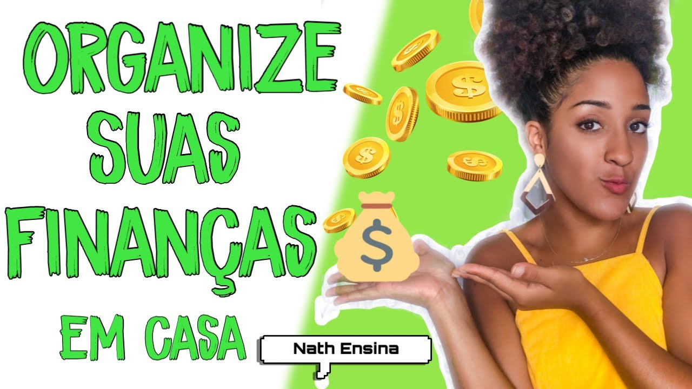
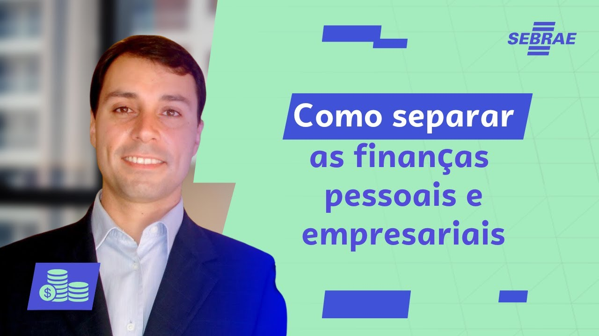
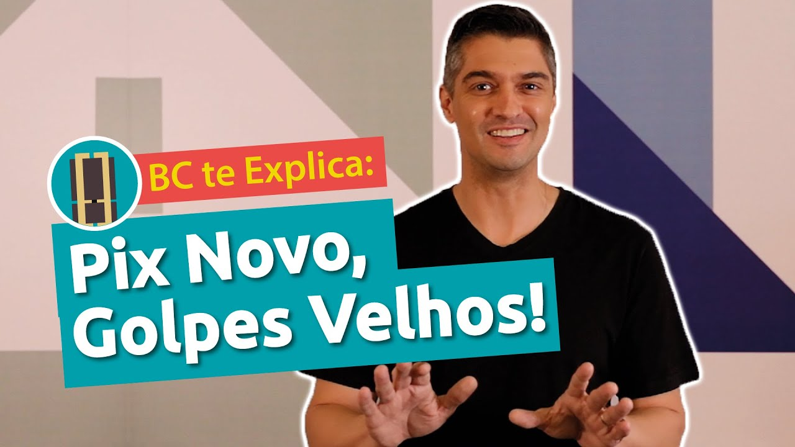
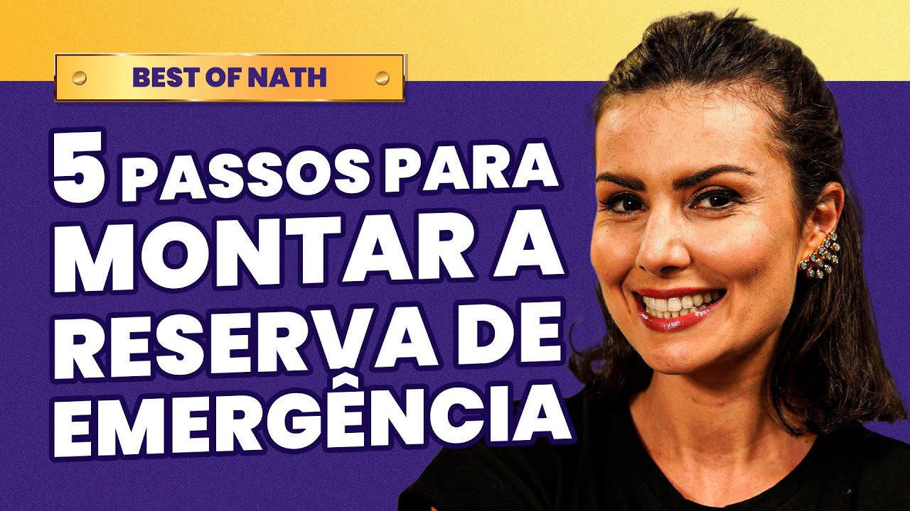

Sua Jornada para a Liberdade Financeira
Mudar de vida e construir um futuro seguro não é um privilégio de poucos, é um direito seu. Sabia que a falta de dinheiro nem sempre é culpa de quem trabalha duro? A verdade é que ninguém nos ensinou a lidar com as finanças no dia a dia. Mas hoje, a história começa a mudar.
-
Passo 1: Conscientização

1Organizar as finanças não é sobre ser rico, é sobre ter paz de espírito. O primeiro passo da mudança é olhar para a sua realidade sem culpa ou vergonha. Compreender o orçamento tira o peso emocional da escassez e transforma o planejamento na sua primeira ferramenta real de liberdade.
-
Para mudar o futuro, você precisa saber exatamente onde está pisando hoje. Mapear cada centavo que entra (ganhos) e cada centavo que sai (gastos) permite identificar pequenos desperdícios e fazer o dinheiro render mais para o que realmente importa na sua casa.
2 -
Passo 3: Separando as Contas

3Se você trabalha por conta própria, vende algo ou tem um comércio no bairro, misturar o dinheiro da empresa com o bolso pessoal é o caminho mais rápido para quebrar. Este passo ensina a dar segurança ao seu negócio e garantir um salário fixo (pró-labore) para você de forma organizada.
-
Às vezes, apenas cortar gastos não basta; é preciso aumentar o dinheiro que entra. Este passo serve para abrir seus olhos para oportunidades reais — usando talentos manuais, desapegando de itens usados ou prestando pequenos serviços locais e digitais — transformando ideias simples em um faturamento a mais no final do mês.
4 -
Passo 5: Segurança e Armadilhas

5Não basta ganhar dinheiro, é preciso saber protegê-lo. A inclusão digital trouxe facilidades, mas também trouxe armadilhas, principalmente para os mais velhos. Conhecer os golpes mais comuns do Pix, links falsos e evitar juros abusivos de cartões garante que o seu esforço não seja roubado por criminosos.
-
Imprevistos acontecem com todo mundo: um problema de saúde, um cano que estoura ou um mês fraco nas vendas. Guardar nem que seja R$ 2, R$ 5 ou R$ 10 por mês cria uma proteção indispensável. Essa reserva evita que você precise recorrer a empréstimos caros ou agiotas em momentos difíceis.
6Passo 6: Reserva da Esperança

-
7
O objetivo final de organizar o presente é poder escolher o seu amanhã. Ao dominar seu dinheiro e buscar novas fontes de renda, você ganha o poder de traçar metas reais para mudar de vida: investir em um curso técnico, ampliar o seu negócio local, reformar a casa ou dar uma condição melhor para a sua família.